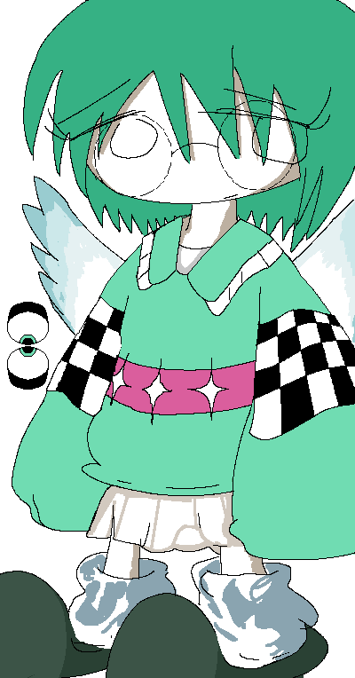

|

|

Astrid
Introduced 14 March 2026
Astrid's Associated Music:
Play Music"Astrid's Theme: Everything is Green"
View Gallery Page
General Information:
Astrid is a recurring character in Colormill.
Personality:
Astrid is capable of being at least somewhat polite. She prefers to not socialize due to her fear of being rejected, as well as her desire to thrive in her own inner world.
At times, she can be overly social. This is, however, out of forcefulness or delusion rather than actual change of social makeup. Because of this, she frequently experiences significant burnout.
Spawn Quirk:
Astrid has the ability to spawn eyeballs that can float or be held. This is due to her inquisitive nature. She can see out of the eyeballs, but can only use them for eyesight while temporarily disabling the eyes on her face, as she would experience complications otherwise.
Periodically, she will experience hallucinogenic visions from her spawned eyeballs. She does not feel particularly troubled by her hallucinations, as she can toggle her vision between her body and the spawned eyeballs at will, which lets her avoid the visions entirely. She believes that the visions are part of a process where she may enforce a deeper connection with her eyeballs, almost as if they were sentient.
Astrid has a maximum limit of 5 eyeballs that she can spawn at a time. In addition, they cannot float past a 25 foot radius from wherever she is standing. If she tries to navigate an eyeball past the limit, it will automatically despawn.
Relationships:
Astrid is Linnea's sister, and the younger one of the two. Astrid does not try to keep up with her, and tends to maintain her distance. However, she still has a subtle appreciation for her and her rapid lifestyle.
Blanche knows about Astrid from past endeavors, and they will rarely communicate with each other. Astrid is characterized as having a strong but one-sided appreciation for her. She has a fondness for her general nature as an amalgamation of colors represented through a white embodiment.
[Colormill Home]
Project Launched 11 February 2026